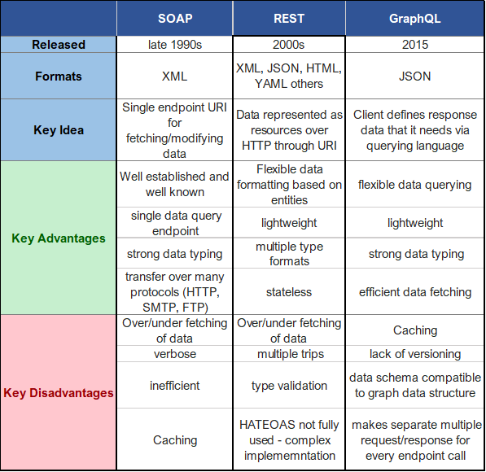

SOAP este un protocol folosit pentru a schimba informatii structurate intr-un mediu descentralizat si distribuit. Utilizează tehnologii XML pentru a defini un cadru de mesagerie extensibil care furnizează o construcție de mesaje ce poate fi schimbată pe o varietate de protocoale subiacente. The framework has been designed to be independent of any particular programming model and other implementation specific semantics. Cadrul a fost proiectat să fie independent de orice model de programare particular și de alte semantice specifice implementării.
Un mesaj SOAP este specificat ca infoset XML ale cărui comentarii, element, atribut, spațiu de nume și elemente de informații despre caracter pot fi serializate ca XML 1.0. Un mesaj SOAP Infoset constă intr-un document information item cu exact un membru în proprietatea sa [copii], care TREBUIE să fie un element infromation item . SOAP oferă un model de procesare distribuit care presupune că un mesaj SOAP este originar de la un expeditor SOAP inițial și este trimis la un receptor SOAP final prin intermediul a zero sau mai mulți intermediari SOAP. Rețineți că modelul de procesare distribuit SOAP poate suporta mai mulți deputați, inclusiv, fără a se limita la mesaje unidirecționale, interacțiuni cerere / răspuns și conversații de la egal la egal. Modelul de procesare SOAP specifică modul în care un receptor SOAP procesează un mesaj SOAP. Se aplică numai unui singur mesaj, izolat de orice alt mesaj SOAP. Nu menține nicio stare și nu realizează nicio corelație sau coordonare între mesaje, chiar, de exemplu, atunci când este utilizat în combinație cu o caracteristică SOAP care implică trimiterea mai multor mesaje SOAP în secvență, fiecare mesaj ulterior în funcție de răspunsul la mesajul anterior. Este responsabilitatea fiecarei caracteristici sa isi defineasca orice prelucrari combinate.
SOAP oferă un cadru de mesagerie simplu a cărui funcționalitate principală este legată de furnizarea de extensibilitate. Mecanismele de extensibilitate descrise mai jos pot fi utilizate pentru a adăuga funcții găsite în medii de mesagerie mai bogate.
- Un feature SOAP este o extensie a cadrului de mesagerie SOAP. Deși SOAP nu prezintă restricții cu privire la sfera potențială a unor astfel de funcții, funcțiile de exemplu pot include „fiabilitate”, „securitate”, „corelație”, „rutare” și modele de schimb de mesaje (MEP), cum ar fi cererea / răspunsul, unidirecțional, și conversații de la egal la egal.
- Un model de schimb de mesaje (MEP-Message Exchange Pattern ) este un șablon care stabilește un model pentru schimbul de mesaje între nodurile SOAP. MEP-urile sunt un tip de caracteristică și, dacă nu se prevede altfel, referințele din această specificație la termenul „caracteristică” se aplică și în cazul MEP-urilor. MEP pentru cerere-răspuns ilustrează specificația unei funcții MEP.
- Termenul "modul SOAP" se referă la specificarea sintaxei și a semanticii unuia sau mai multor blocuri de antet SOAP. Un modul SOAP realizează zero sau mai multe caracteristici SOAP.
Cadrul de mesagerie SOAP nu oferă în mod direct niciun mecanism pentru a face față controlului accesului, confidențialității, integrității și non-repudierii. Astfel de mecanisme pot fi furnizate ca extensii SOAP folosind modelul de extensibilitate SOAP (vezi 3. Modelul de extensie SOAP). Această secțiune descrie considerațiile de securitate pe care proiectanții și implementatorii trebuie să le ia în considerare la proiectarea și utilizarea acestor mecanisme.
- Noduri SOAP: SOAP poate transporta date definite de aplicație ca blocuri de antet SOAP sau ca conținut corp SOAP. Procesarea unui bloc de antet SOAP poate include abordarea efectelor secundare, cum ar fi modificările de stare, înregistrarea informațiilor sau generarea de mesaje suplimentare. Este recomandat ca, pentru orice scenariu de implementare, numai blocurile de antet SOAP specificate cu atenție, cu implicații de securitate bine înțelese ale oricăror efecte secundare să fie procesate de un nod SOAP.
- Intermediari SOAP: SOAP furnizează în mod inerent un model de procesare distribuit care ar putea implica un mesaj SOAP care trece prin mai multe noduri SOAP .Intermediarii SOAP sunt, prin definiție, "men in the middle" și reprezintă o oportunitate pentru "man-in-the-middle attacks". Încălcările de securitate pe sistemele care rulează intermediari SOAP pot duce la grave probleme de securitate și confidențialitate. Un comisionar SOAP compromis sau un intermediar implementat sau configurat fără a ține cont de considerente de securitate și confidențialitate, ar putea fi utilizat în comisia unei game largi de atacuri potențiale.
- Legaturi de protocol de baza: Efectele asupra securității neimplementării unui TREBUIE, sau a face ceva din specificația spune că NU trebuie să fie făcut pot fi foarte subtile. Autorii specificațiilor au datoria să descrie, în detaliu, implicațiile de securitate ale nerespectării recomandărilor sau cerințelor, deoarece majoritatea implementatorilor nu ar putea sa nu benefizieze de experiența și discuțiile care au produs specificația.
REST este un stil de arhitectura software care definește un set de constrângeri care trebuie utilizate pentru crearea serviciilor Web. Serviciile web care se conformează stilului arhitectural REST, numite RESTful Web Services, asigură interoperabilitatea între sistemele informatice de pe Internet. Serviciile web RESTful permit sistemelor solicitante să acceseze și să manipuleze reprezentările textuale ale resurselor Web prin utilizarea unui set uniform și predefinit de operații stateless. Alte tipuri de servicii Web, cum ar fi serviciile Web SOAP, își expun propriile seturi de operații arbitrare
Transferul se realizează prin protocolul HTTP. Reprezentarea este modelată conform unui format – e.g., JSON sau XML – șiindicată prin tipuri MIME (media types). Adresabilitatea se rezolvă via URI.
- GET: descărcarea resursei specificate de pe serverul web pe client; majoritatea cererilor către un server web sunt de acest tip
- PUT: încărcarea resursei specificate de pe client pe serverul web (cu suprascrierea acesteia, în cazul în care există deja); trebuie specificate și datele de autentificare, utilizatorul respectiv trebuind să aibă permisiunile necesare pentru o astfel de operatie
- POST: transferul de informații de către client cu privire la resursa specificată, acestea urmând a fi prelucrate de serverul web
- DELETE: ștergerea resursei specificate de pe serverul web, rezultatul operației depinzând de permisiunile pe care le deține utilizatorul ale cărui date de autentificare au fost transmise în antete
Constrângerile stilului arhitectural REST afectează următoarele proprietăți arhitecturale:
Șase constrângeri de ghidare definesc un sistem RESTful. Aceste constrângeri restricționează modalitățile prin care serverul poate prelucra și răspunde la solicitările clientului
Cele mai bune practici pentru a realiza un serviciu RESTful securizat:
GraphQL este un limbaj de interogare a datelor pentru interfețe de programare a aplicațiilor (API). Această idee este similară cu modul în care se poate interoga o bază de date. Acest limbaj de interogare folosește trimiterea unui obiect JSON (JavaScript Object Notation) ca o solicitare a ceea ce aveți nevoie, prin HTTP, iar după aceea, un răspuns va fi returnat exact ceea ce aveți nevoie, în JSON.
Preluarea datelor:Obținerea de date este cu siguranță unul dintre cele mai convingătoare avansuri introduse de GraphQL. Într-o API standard REST pentru a obține sau recupera date, am putea solicita să facem solicitări la numeroase endpoint-uri. În comparație, GraphQL oferă un singur endpoint prin care accesăm datele disponibile pe server. Este considerabil mult mai simplu să obțineți mai multe date decât aveți nevoie în REST decât în GraphQL, deoarece fiecare punct final din specificația REST include o formare de date decontată. În mod similar, cu REST, este relativ mai ușor să obțineți setul de date, permițând clienților să facă solicitări suplimentare pentru a obține date relevante.
O altă cerință importantă pentru multe aplicații de astăzi este de a avea o conexiune în timp real la server pentru a vă informa imediat despre evenimentele importante. Pentru acest caz de utilizare, GraphQL oferă conceptul de abonamente. Când un client se abonează la un eveniment, acesta va iniția și va ține o conexiune constantă la server. Ori de câte ori se întâmplă acest eveniment anume, serverul împinge datele corespunzătoare către client. Spre deosebire de interogari și mutații care urmează un tipic „ciclu de solicitare-răspuns”, abonamentele reprezintă un flux de date trimise clientului.
Puterea pe care o oferă GraphQL vine cu unele noi amenințări la adresa securității. Cea mai comună este interogările adânc imbibate, care au ca rezultat calcule costisitoare și sarcini utile JSON mari, care pot perturba calitatea rețelei sau o pot reduce cu totul. Modul corect de a vă proteja API-ul de acest tip de atac este de a limita adâncimea interogării, astfel încât interogările adânci sunt blocate înainte de calcularea rezultatului. Limitarea adâncimii GraphQL oferă o interfață ușoară pentru limitarea profunzimii tuturor interogărilor.
Încălcări precum fortarea bruta a formularului de log-in pun în pericol toate site-urile și aplicațiile expuse internetului. Atacatorii îți pot afecta mutația de conectare cu e-mailuri și parole care apar în aceste liste până când vor primi răspunsul pe care îl caută. Din fericire, există o modalitate ușoară pentru de a face acest lucru cu adevărat dificil și lent pentru atacatori, transformandu-te o țintă mai puțin atrăgătoare. Acest plugin GraphQL - Rate Limit - permite specificarea limitele întrebărilor și mutațiilor în trei moduri diferite, directive personalizate graphql-shield sau cu funcția de limitare a ratei de bază.
Este ușor să credeți că dacă doriți să permiteți unui utilizator să actualizeze o resursă, ar trebui să îi permiteți să specifice ce resursă dorește să actualizeze. Dar ce se întâmplă dacă primesc ID-ul unei resurse pe care nu au privilegii CRUD? Fără nicio protecție din partea serverului, un atacator cu o listă de ID-uri ar fi capabil să actualizeze adresa de e-mail pentru un potențial utilizator. Soluția evidentă aici este adăugarea unui test pentru a vă asigura că ID-ul utilizatorului curent se potrivește cu ID-ul din câmpurile de introducere.
Prin alocarea unui cost fiecărei interogări și specificarea unui cost maxim pentru fiecare interogare, ne putem proteja de atacatorii care execută mai multe interogări costisitoare simultan. Plug-ul GraphQL Cost Analysis este o modalitate simplă de a specifica costurile și limitele costurilor.
GraphQL este un instrument extrem de util pentru dezvoltare. Este atât de puternic încât chiar vă va documenta schema, interogările și abonamentele. Aceste informații ar putea fi o mină de aur pentru atacatorii care doresc să găsească exploatări în aplicație. Plug-ul GraphQL Display Introspection va împiedica schemele să fie scurse în medii cu public. Pur și simplu importați pluginul și aplicați-l la regulile de validare.
SOA reprezinta un stil arhitectural de proiectare și dezvoltare de aplicații considerate drept servicii care pot fi invocate de alte aplicații. Este o paradigmă de dezvoltare a software-ului care adoptă folosirea de servicii, oferind funcționalități solicitate de utilizatori. Resursele sunt disponibile via o suită de servicii independente ale căror implementări nu trebuie să fie cunoscute.
Caracteristici:
Orchestrarea presupune existența unui serviciu principal (service orchestrator) care coordonează invocarea altor servicii și preluarea răspunsurilor oferite de acestea
Coregrafia este o descriere globală a serviciilor autonome participante la o activitate, definind maniera de interschimb de mesaje, reguli de interacțiune (e.g., protocoale) și contracte între două sau mai multe puncte-terminale
SOAP a fost unul dintre primele protocoale web cele mai utilizate pe scară largă, dar pe măsură ce web-ul mondial a crescut, cu multe solicitări, răspunsuri și evoluția web-ului mobil - veridicitatea și eficiența SOAP nu au fost suficiente pentru o mulțime de aplicații.
De-a lungul timpului a venit REST, sperând să rezolve problema prin reprezentarea resurselor în adresele URL. Nu numai că acest lucru a fost mai eficient, dar REST a acceptat și JSON - unul dintre cele mai utilizate obiecte web.
Cu toate acestea, boom-ul social media și gigantii precum Facebook nu s-au putut baza doar pe REST. REST are problema supunerii sau excesului. Aceasta înseamnă să obțineți mai multe date sau mai puține date decât este necesar atunci când trimiteți o solicitare. Astfel, Facebook a creat GraphQL! Cu aceasta, clientul definește ce date are nevoie, iar serverul trimite înapoi exact ceea ce a fost solicitat. De asemenea, face acest lucru dintr-un singur punct final - care a fost împrumutat înapoi de la SOAP. Poate chiar prelua date din baze de date diferite cu o singură interogare. Dar, din nou, GraphQL nu poate fi soluția de aur fără compromisuri. GraphQL nu are suport pentru versiune, iar acest lucru nu oferă nicio indicație clară a datelor care sunt depășite sau când se actualizează API-ul. De asemenea, SOAP și GraphQL nu oferă propriile lor mecanisme de cache.
Iată o descriere a comparației dintre toate:
Adevarul este ca dintre cele 3, nu ar castiga nici una. Sunt toate inca relevante in ziua de azi. In schimb, ne putem ghida in linii mari in functie de decizia de care avem nevoie: